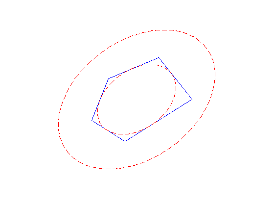

% Section 8.4.1, Boyd & Vandenberghe "Convex Optimization" % Original version by Lieven Vandenberghe % Updated for CVX by Almir Mutapcic - Jan 2006 % (a figure is generated) % % We find the ellipsoid E of maximum volume that lies inside of % a polyhedra C described by a set of linear inequalities. % % C = { x | a_i^T x <= b_i, i = 1,...,m } (polyhedra) % E = { Bu + d | || u || <= 1 } (ellipsoid) % % This problem can be formulated as a log det maximization % which can then be computed using the det_rootn function, ie, % maximize log det B % subject to || B a_i || + a_i^T d <= b, for i = 1,...,m % problem data n = 2; px = [0 .5 2 3 1]; py = [0 1 1.5 .5 -.5]; m = size(px,2); pxint = sum(px)/m; pyint = sum(py)/m; px = [px px(1)]; py = [py py(1)]; % generate A,b A = zeros(m,n); b = zeros(m,1); for i=1:m A(i,:) = null([px(i+1)-px(i) py(i+1)-py(i)])'; b(i) = A(i,:)*.5*[px(i+1)+px(i); py(i+1)+py(i)]; if A(i,:)*[pxint; pyint]-b(i)>0 A(i,:) = -A(i,:); b(i) = -b(i); end end % formulate and solve the problem cvx_begin variable B(n,n) symmetric variable d(n) maximize( det_rootn( B ) ) subject to for i = 1:m norm( B*A(i,:)', 2 ) + A(i,:)*d <= b(i); end cvx_end % make the plots noangles = 200; angles = linspace( 0, 2 * pi, noangles ); ellipse_inner = B * [ cos(angles) ; sin(angles) ] + d * ones( 1, noangles ); ellipse_outer = 2*B * [ cos(angles) ; sin(angles) ] + d * ones( 1, noangles ); clf plot(px,py) hold on plot( ellipse_inner(1,:), ellipse_inner(2,:), 'r--' ); plot( ellipse_outer(1,:), ellipse_outer(2,:), 'r--' ); axis square axis off hold off
Calling sedumi: 34 variables, 15 equality constraints For improved efficiency, sedumi is solving the dual problem. ------------------------------------------------------------ SeDuMi 1.21 by AdvOL, 2005-2008 and Jos F. Sturm, 1998-2003. Alg = 2: xz-corrector, Adaptive Step-Differentiation, theta = 0.250, beta = 0.500 eqs m = 15, order n = 23, dim = 42, blocks = 8 nnz(A) = 53 + 0, nnz(ADA) = 119, nnz(L) = 67 it : b*y gap delta rate t/tP* t/tD* feas cg cg prec 0 : 4.08E+00 0.000 1 : 1.21E+00 1.71E+00 0.000 0.4194 0.9000 0.9000 2.95 1 1 1.6E+00 2 : 6.35E-01 5.08E-01 0.000 0.2970 0.9000 0.9000 2.13 1 1 3.8E-01 3 : 8.84E-01 9.53E-02 0.000 0.1874 0.9000 0.9000 0.94 1 1 8.0E-02 4 : 9.48E-01 5.96E-03 0.000 0.0625 0.9900 0.9900 0.95 1 1 5.1E-03 5 : 9.52E-01 1.60E-04 0.000 0.0268 0.9900 0.9900 1.00 1 1 1.4E-04 6 : 9.52E-01 8.02E-06 0.372 0.0502 0.9904 0.9900 1.00 1 1 5.3E-06 7 : 9.52E-01 1.58E-06 0.000 0.1969 0.9120 0.9000 1.00 1 1 1.0E-06 8 : 9.52E-01 3.36E-07 0.121 0.2127 0.9168 0.9000 1.00 1 1 2.3E-07 9 : 9.52E-01 5.63E-08 0.000 0.1675 0.9096 0.9000 1.00 1 1 4.4E-08 10 : 9.52E-01 8.02E-09 0.000 0.1425 0.9101 0.9000 1.00 1 1 7.2E-09 iter seconds digits c*x b*y 10 0.1 8.1 9.5230751775e-01 9.5230750982e-01 |Ax-b| = 1.3e-10, [Ay-c]_+ = 4.2E-09, |x|= 2.2e+00, |y|= 2.6e+00 Detailed timing (sec) Pre IPM Post 1.000E-02 9.000E-02 0.000E+00 Max-norms: ||b||=1, ||c|| = 2.474874e+00, Cholesky |add|=0, |skip| = 0, ||L.L|| = 1.03991. ------------------------------------------------------------ Status: Solved Optimal value (cvx_optval): +0.952308
